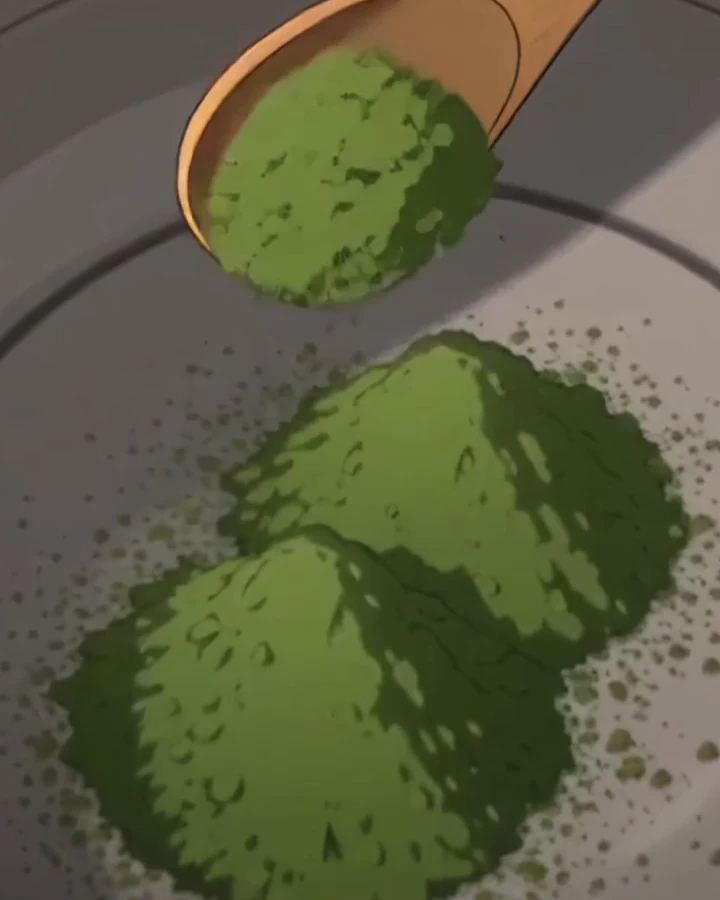
Uji · first harvest
Ceremonial matcha
Shaded for three weeks, stone-milled. Deep and sweet, almost no bitterness. For usucha and koicha.
Concept priceCeremonial matcha by the tin, the ware to whisk it, and six seats at our counter. Buy the tea, or come and watch it made.
Movement 02 · Fukusa
Before any tea, the host folds a square of silk and wipes each tool in front of the guest. Nothing happens out of sight.
Movement 03 · Natsume
Stone-ground leaf fades in light and air. Ours ships in 50 g tins sealed with nitrogen, and the first time it meets the air is at your table.
Movement 05 · Water
Boiling water scalds matcha bitter. We draw it from the iron kettle just before the boil and let it rest a moment in the bowl.
Movements 06–07
Hot water softens the bamboo tines so they bend instead of snapping. Then the bowl is wiped dry: a spoon of water left in it thins the tea.
Movements 08–09 · Chashaku
Sifted first, so there are no lumps. Two heaped bamboo scoops make one bowl of usucha, the thin tea.
Movements 11–12 · Chasen
Fast, from the wrist, zig-zag rather than circles. Stop when the foam is fine and the bubbles are too small to see.
Movements 14–15
The host sets the bowl down with its face toward you. Turn it twice so you don't drink from the front, and finish in three sips.
Movement 16 · The tea room
The teas
Everything we pour in the tea room, sold by the tin. Prices are from, for 50 g.

Shaded for three weeks, stone-milled. Deep and sweet, almost no bitterness. For usucha and koicha.
Concept price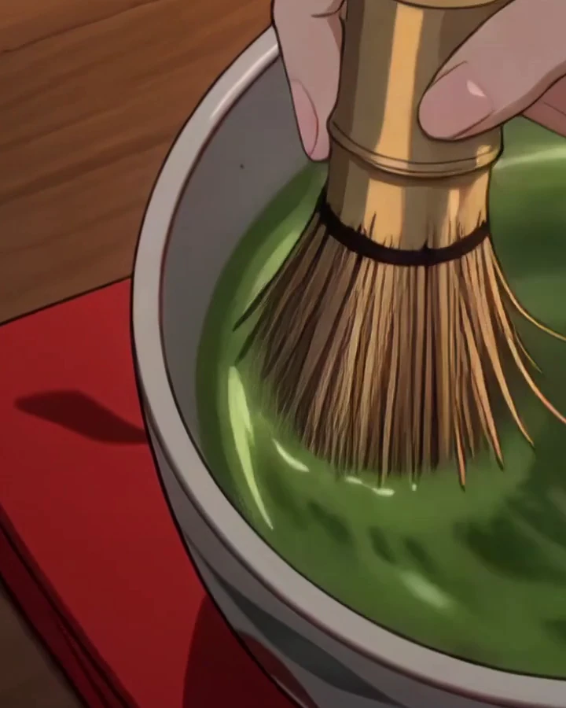
Brighter and grassier. Stands up to milk and ice, and forgives a heavy hand with the whisk.
Concept price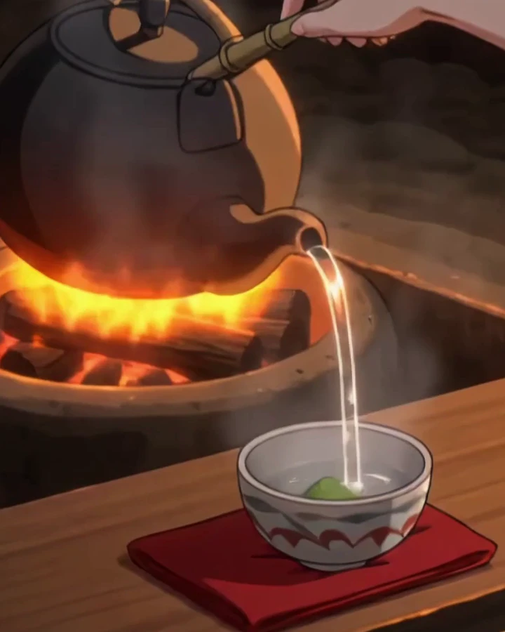
Green tea roasted over charcoal until it turns brown. Toasty, low in caffeine, good after dinner.
Concept price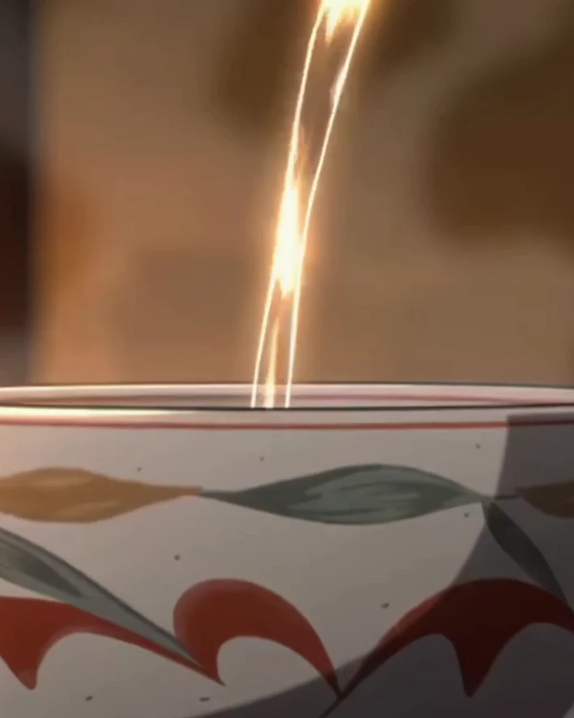
Sencha with roasted brown rice and a little matcha. Nutty and easy, the tea we pour first-timers.
Concept priceConcept site: teas, origins and prices are sample content.
Tea ware
Four pieces, all of them in the film above. Buy them one at a time, or start with the set.
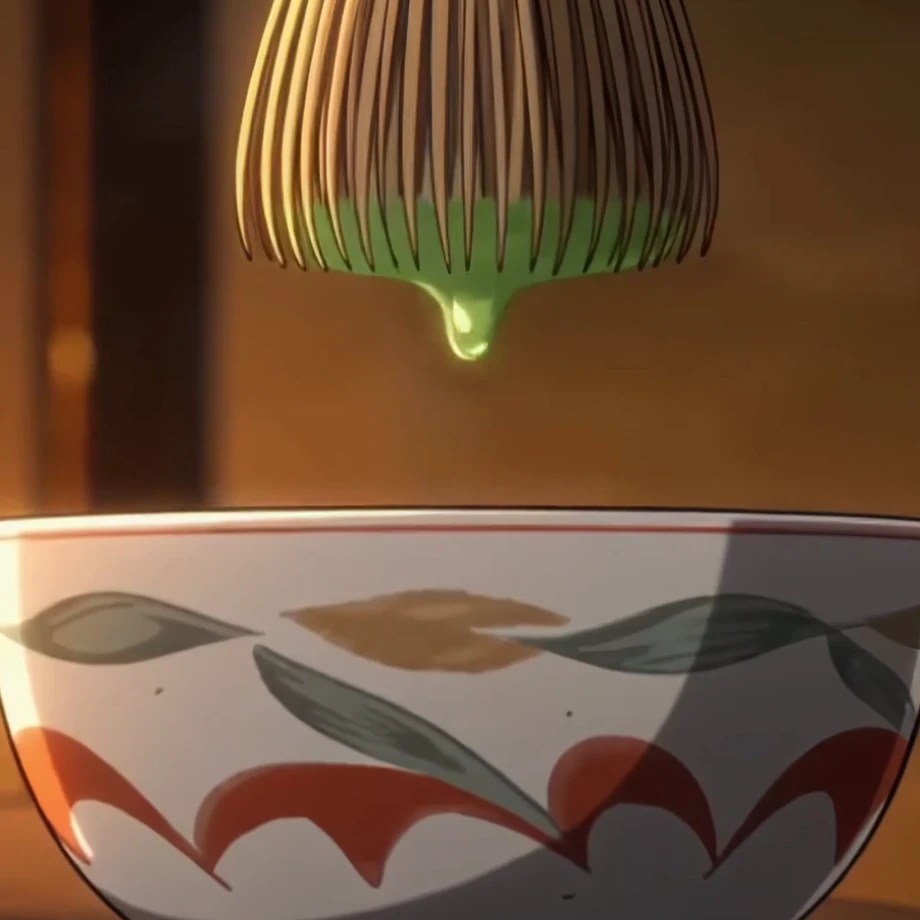
Wide and deep enough for the whisk to move. Glazed stoneware, each one a little different.
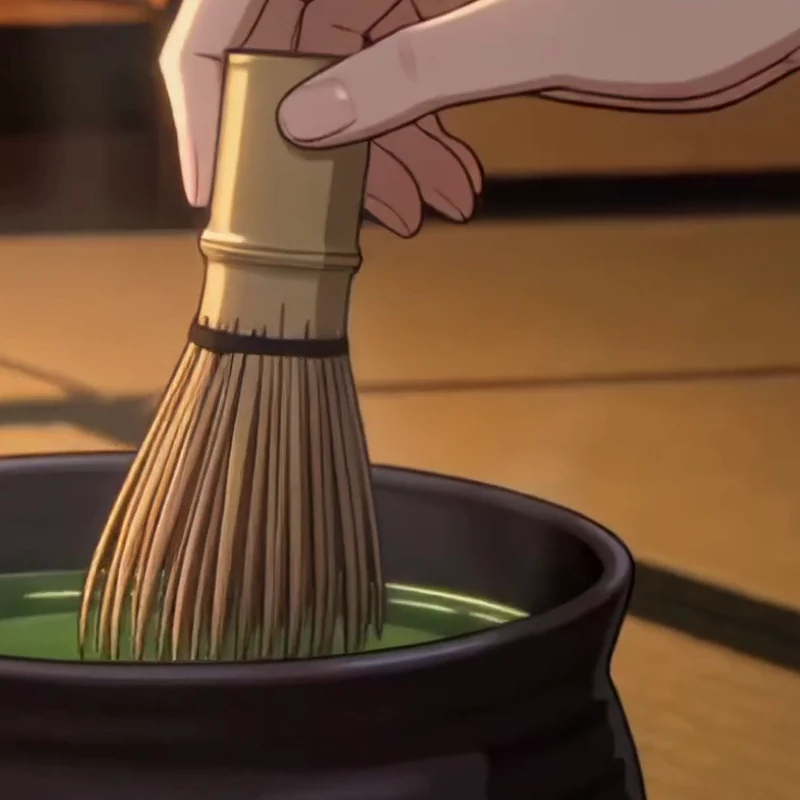
Carved from one piece of bamboo, 80 tines. Soak it before use and it lasts a season of daily bowls.
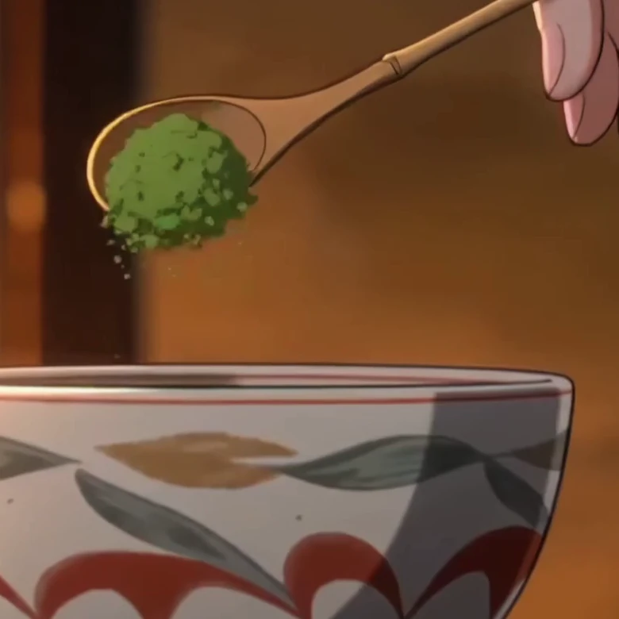
A bent strip of bamboo. One heaped scoop is about a gram, so you never need scales.
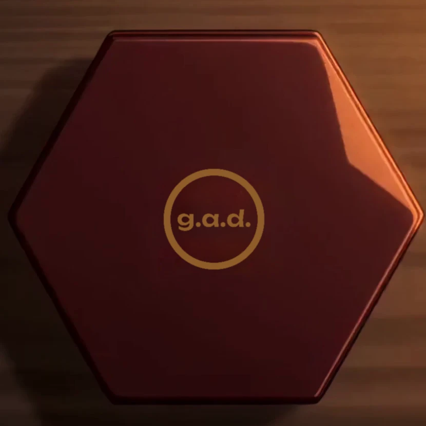
Lacquered wood with the g.a.d. seal in gold. Holds one tin of matcha and keeps the light out.
Starter set
Bowl, whisk, scoop and a 30 g tin of daily matcha, with a printed card of the sixteen movements.
The tea room
Six seats at a low counter. The host makes the first bowl for you, then hands you the whisk for the second.
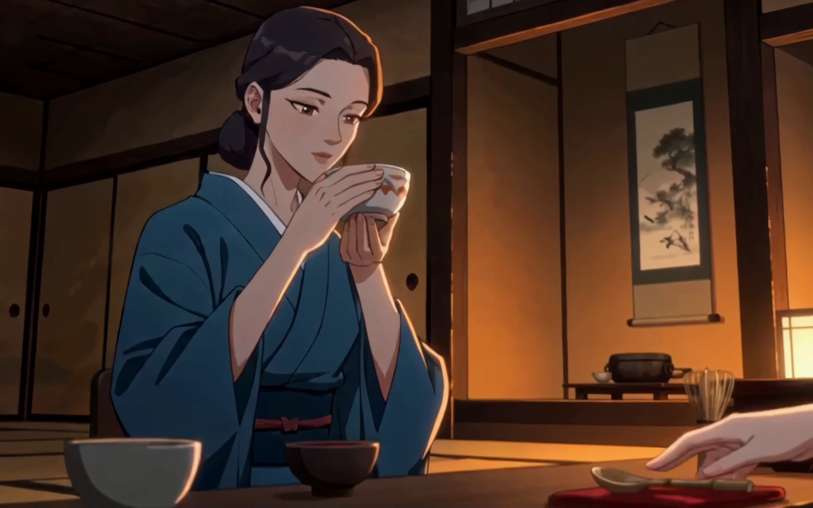
Every ceremony follows the same score. These are four pages of it, the ones guests ask about most.
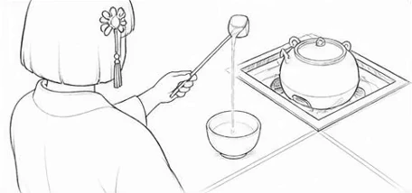
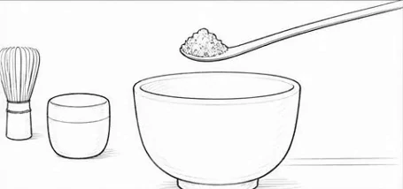
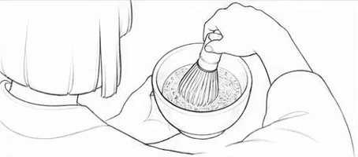
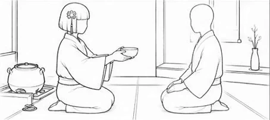
Delivery
We pack in the week an order ships, so the matcha in your tin was milled a few weeks ago, not a few seasons.
In the city
By courier, in a paper box that fits a letterbox slot. Free on orders from $60.
Concept termsAcross the country
Tracked parcel. Tins travel in a cool pack from May to September.
Concept termsOnce it's open
Keep the tin shut and in the fridge. After a month the colour dulls and the sweetness goes first.
Order or book
Tell us what you'd like. For the ceremony, pick a day and we'll offer the nearest free session by email.